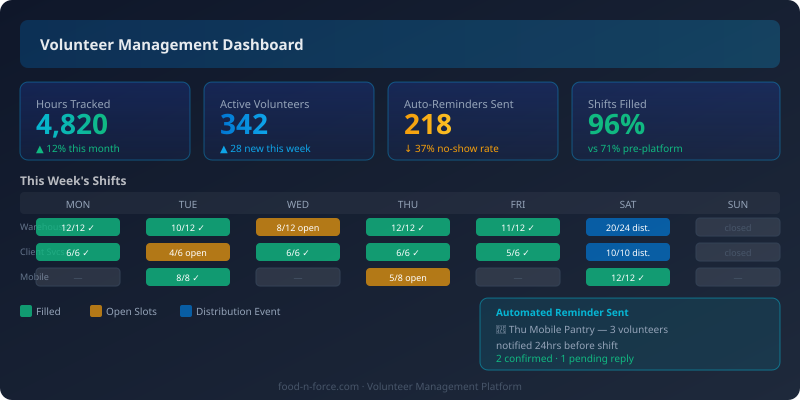

For most food banks, volunteers are not a supplement to operations — they are operations. A mid-sized food bank might coordinate 300 to 500 active volunteers across warehouse sorting, client distribution, mobile pantry runs, and administrative support. Managing that workforce with spreadsheets, group emails, and phone calls is not just inefficient. It is a silent drain on the coordinators who carry it, and a hidden reason why volunteers quietly stop coming back.
The right volunteer management technology does not just digitize what you are already doing. It fundamentally changes the relationship between coordinators, volunteers, and the work itself — making each role easier, more reliable, and more satisfying.
The Hidden Costs of Spreadsheet-Based Management

When volunteer coordinators manage their programs through spreadsheets and manual communication, the problems are predictable: scheduling conflicts that are not caught until the morning of a shift, no-shows that leave sorting lines short-staffed, manual reminder emails that go out late or not at all, and hour logs that require volunteers to email their times after each shift.
The compounding effect is significant. Coordinators spend four to six hours per week on administrative tasks that technology could handle automatically. Volunteers encounter friction — unclear shift details, late confirmations, no easy way to swap — and eventually find it easier to stop volunteering than to navigate the confusion. Turnover among regular volunteers is often attributed to scheduling frustrations more than any other factor.
There is also a grant reporting dimension. Most funders require documented volunteer hours as part of in-kind match calculations. When hour tracking is manual and inconsistent, food banks lose real dollar value in grant applications because they cannot substantiate their volunteer contributions.
What Good Volunteer Management Software Provides
Purpose-built volunteer management platforms address these problems systematically. Self-scheduling portals let volunteers browse available shifts, sign up, and receive immediate confirmation without coordinator involvement. Automated reminders — sent 48 and 24 hours before a shift — reduce no-show rates dramatically, often by 30 to 40 percent in the first few months of use.
Hour tracking becomes passive. When a volunteer checks in at a kiosk or via a mobile app, hours are logged automatically. Coordinators can pull grant-ready reports showing total hours, hours by program area, and hours by volunteer cohort in minutes rather than days. The time savings at grant reporting season alone justify most platform costs for food banks above a certain volunteer volume.
Skill matching is a more advanced feature that pays dividends in service quality. When volunteers indicate their skills — forklift certification, fluency in Spanish, food handler certification, experience in client-facing roles — coordinators can build shifts with the right mix of capabilities. This is especially valuable for specialized programs like senior nutrition delivery, where consistent, trained volunteers make a measurable difference in client experience.
Integrating Volunteer Management with Salesforce
For food banks already using Salesforce, volunteer management integration transforms disconnected data into operational intelligence. Platforms like Volunteer Impact (by Better Impact) or Salesforce's own Volunteers for Salesforce package can be connected to your CRM so that volunteer records, hours, and engagement history live alongside donor and client data.
This integration enables relationships that paper systems cannot surface. A long-term volunteer who has also made multiple donations is a major gift prospect — but only if someone can see both sides of the relationship. When volunteer and donor data are unified, your development team can identify these individuals and steward them appropriately.
Onboarding workflows benefit particularly from Salesforce integration. When a new volunteer submits an application, an automated workflow can trigger a background check request, send orientation scheduling links, assign onboarding tasks to the coordinator, and move the volunteer through a defined status progression — all without manual intervention. New volunteers move from application to first shift faster, and nothing falls through the cracks.
Managing High-Volume Distribution Events
Monthly or weekly large-scale distribution events present a distinct management challenge. A drive-through food distribution serving 500 families in a single morning might require 80 volunteers across eight different roles — traffic direction, box assembly, loading, client check-in, multilingual support, and logistics coordination. The difference between a smooth event and a chaotic one often comes down to whether the right people are in the right places at the right times.
Good volunteer management platforms support role-based shift design, where coordinators define specific positions with distinct requirements. Volunteers sign up for a role, not just a time block. The system tracks capacity at the role level, so coordinators can see at a glance whether a critical position is under-staffed before event day. Last-minute gap communications — targeted messages to available volunteers who match a specific role — can go out automatically when cancellations occur.
Recognition, Retention, and the Long Game
Volunteer retention is a strategic priority that technology can directly support. Recognition features — automated milestone emails at 50, 100, and 500 hours; anniversary acknowledgments; birthday greetings — maintain the sense of connection that keeps long-term volunteers engaged. These touchpoints take zero coordinator time after initial setup but consistently rank among the highest-rated aspects of volunteer experience in post-program surveys.
The data dimension of volunteer management technology also enables retention analysis that spreadsheets cannot support. Which volunteer cohorts have the highest retention? What is the drop-off point for new volunteers? Which shift types correlate with stronger long-term engagement? These questions are answerable when data is captured systematically, and the answers inform recruitment and program design decisions with real operational impact.
Volunteer coordinators are among the most operationally stretched roles at food banks. Giving them the right technology does not just make their jobs easier — it expands their capacity to build the kind of volunteer culture that sustains a food bank's mission over the long term. The spreadsheet era served its purpose. For organizations serious about their volunteer workforce, it is time to move on.